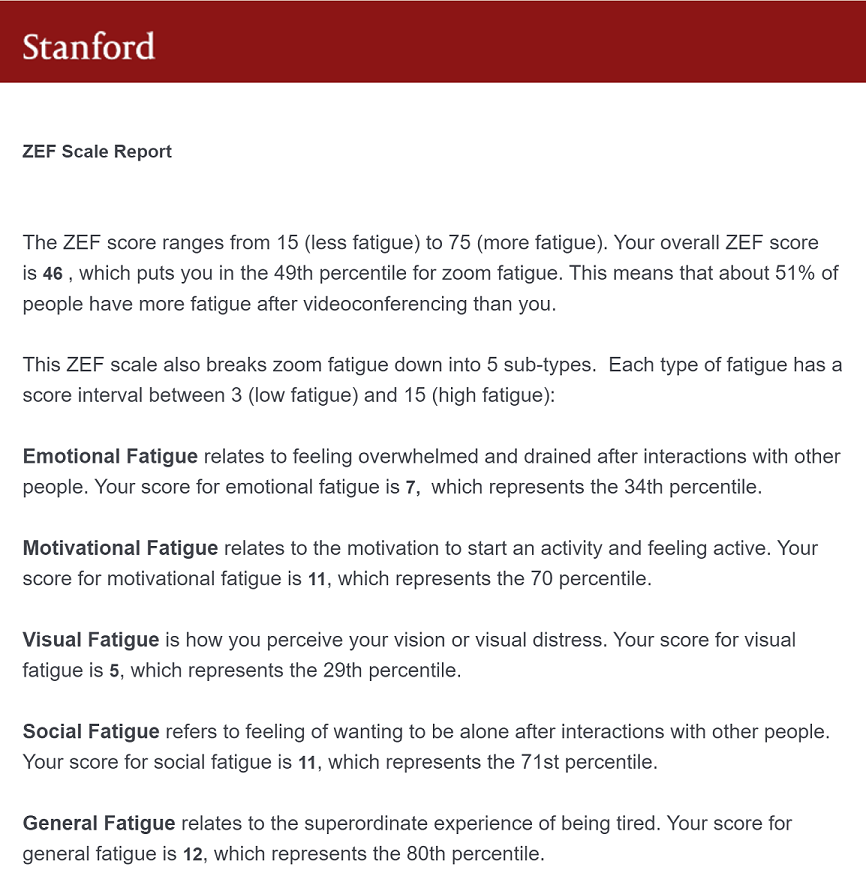

Zoom Go
A mixed reality Zoom mobile app aimed to reduce Zoom fatigue by encouraging students to walk to class.
A mixed reality Zoom mobile app aimed to reduce Zoom fatigue by encouraging students to walk to class.
“Zoom fatigue describes the tiredness, worry, or burnout associated with overusing virtual platforms of communication”
What causes Zoom fatigue and what design changes can we make to
reduce fatigue for university students?
Zoom fatigue can cause negative physical effects such as:
As well as negative mental effects such as:
Myself and everyone else I know has experienced some form of Zoom fatigue so I was curious to see how much Zoom fatigue I have compared to others. I took a survey created by Stanford University to find out my Zoom Exhaustion and Fatigue score and discovered about 51% of people have higher Zoom fatigue than I do.

Researchers from Stanford also found four main reasons as to why people experience Zoom fatigue:
I interviewed five University of Washington students to ask them about their Zoom usage and their thoughts on the Zoom interface. The participants had all spent 10-15 hours on Zoom every week, have had 2+ hour long lectures, and experienced some form of Zoom fatigue. The most surprising results I found were:
Then I compiled a list of pros/cons of Zoom classes that were frequently mentioned by my interviewees
This was my first group design project so I learned many things like conducting user research and creating high fidelity mock ups. Something I could've done better would be creating more detailed personas and focusing our design around them. I feel like our app tries to address too many problems and should instead key in on one or two specific problems that could have been better defined with more user research.